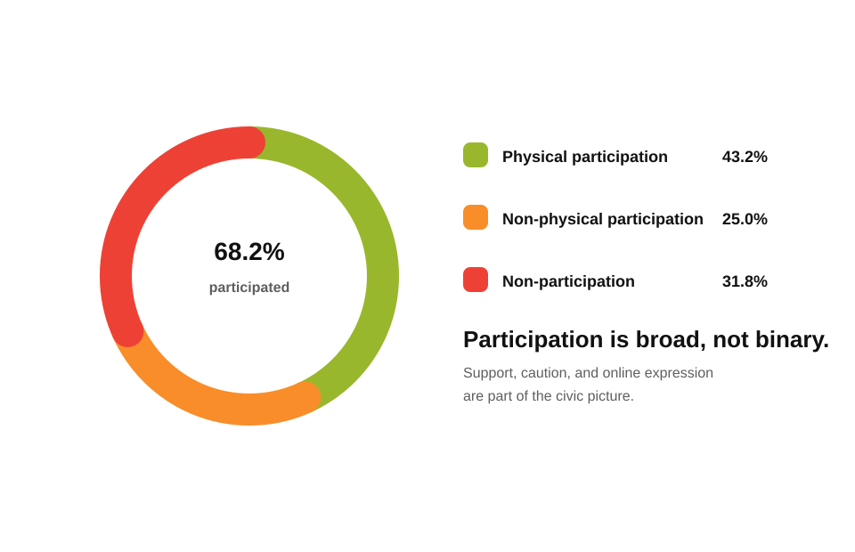
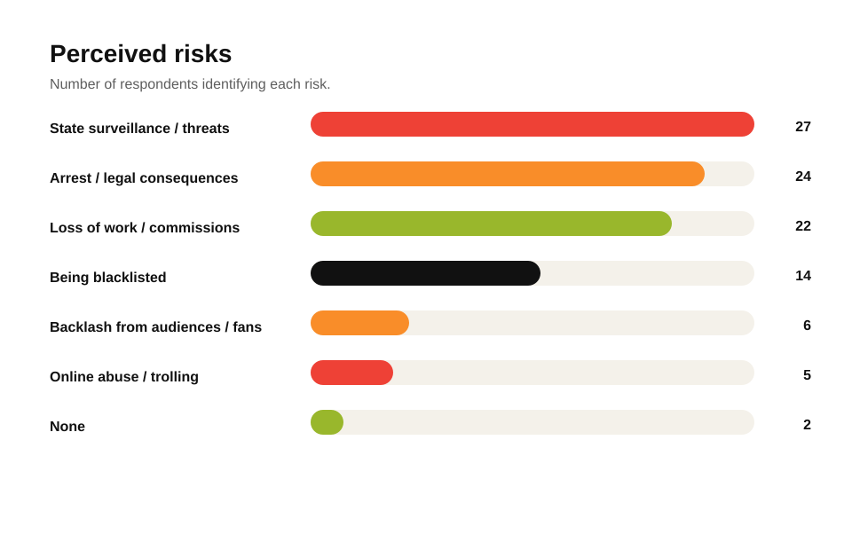
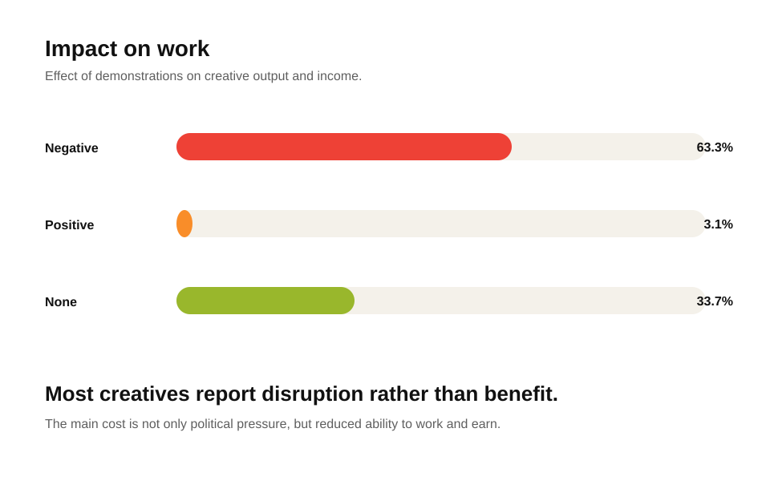
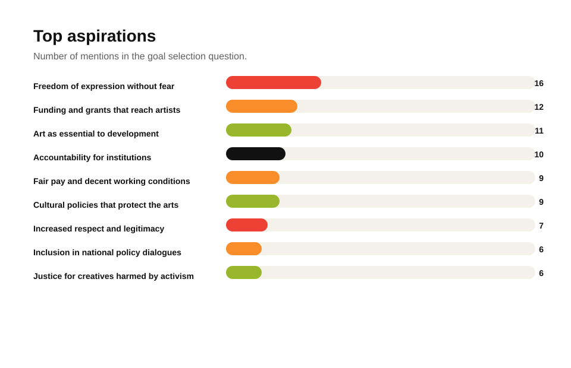

The report finds that Kenyan creatives are highly engaged in civic life, with 90% of respondents using their creative work to engage political or social issues. Participation in maandamano was substantial but varied: while many were physically present, others contributed through digital expression, documentation, artistic production, amplification, or other supportive actions. The findings show that non-participation should not be read as indifference, as many non-attendees still supported the cause but were constrained by safety, economic, professional, or strategic concerns.
A major generational shift is evident. Younger creatives, particularly Gen Z and young millennials, are using digital platforms, visual storytelling, humour, performance, and public expression to engage civic issues more directly and visibly than previous generations. However, this boldness comes with significant risks, including surveillance, arrest, blacklisting, loss of work, online abuse, burnout, and exposure to violence. The report therefore positions creatives as vital civic actors operating under pressure, and calls for stronger protections, fair pay, funding, safe spaces, collective organising, and policy frameworks that safeguard freedom of expression.
Introduction
1.1 Contextualising Creatives and Civic Expression
Creatives have long played a central role in Kenya's sociopolitical life, using artistic expression to question power, articulate dissent, and moCreatives have long played a central role in Kenya’s sociopolitical life, using artistic expression to question power, articulate dissent, and mobilise public imagination. From the cultural nationalism of the independence era, to the coded artistic resistance of the Moi years, to the satirical and multimedia interventions of the early 2000s, artists have consistently been key actors in shaping public discourse and highlighting social and political concerns.
In recent years, particularly during the youth-led protests of June 2024 and their memorialised resurgence in June 2025, the landscape of creative civic expression has entered a new phase. A younger, digitally fluent generation of artists has leveraged social media, audiovisual storytelling, and public performance to document events in real time, amplify public sentiment, and catalyse collective action. This moment is characterised not by the creative activism itself, but by its heightened visibility, accelerated pace, decentralised organisation, and increased personal and professional risks for those involved.
This survey is situated within this contemporary context. It seeks to understand how creatives experienced and articulated their civic engagement during these recent protest cycles. Specifically, it explores their motivations, the challenges they faced, and the aspirations that guide their work at the intersection of artistic practice and sociopolitical expression..
1.2 Demographics: Who Responded?
This demographic profile is based on responses from 102 creatives across Kenya. While the sample is predominantly Nairobi-based (84%), respondents also participated from Mombasa, Nakuru, Kisumu, Uasin Gishu, Laikipia, Kilifi, Kajiado, and Meru.
Age Group Distribution
- 18-23 years
- 33%
- 24-29 years
- 44%
- 30-35 years
- 18%
- 36+ years
- 5%
Creative Category Distribution
- Performance & Live Arts
- 20%
- Film, Video & Animation
- 15%
- Digital Content & Advertising
- 14%
- Writing & Literature
- 13%
- Visual & Design Arts
- 11%
Higher levels of civic engagement were observed among respondents in performance and live arts, film, video & animation, digital content & advertising, and writing & literature, though these patterns may partly reflect demographic composition, multidisciplinary identities, and differences in how creative work is produced and shared. The findings suggest that both the characteristics of creative practice and the visibility afforded by different production and dissemination pathways influence how artists participate in and are perceived within civic mobilisation efforts.
Civic Participation Insights
2.1 How Creatives are Engaging
An overwhelming 90% of respondents reported engaging with political or social issues through their creative work, either directly (58%) or indirectly (42%), out of the participating total. Only a small minority did not participate (9%) or did not specify (1%).
The findings show that civic engagement is broadly embedded within Kenya's creative sector, with most respondents participating in political or social issues through either direct artistic expression or supportive actions that aid visibility and mobilisation.
2.2 Category-specific Engagement
This section examines how civic participation in public demonstrations varies across different creative sectors. While the overall participation rate is high, the intensity and mode of engagement differ by category.
Participation in Demonstrations
3.1 Comparing Physical and Non-physical Participation
The findings indicate that approximately 68% of creatives participated in the demonstrations, while around 32% did not. Among all respondents, 43% engaged through physical presence and 25% through non-physical avenues such as artistic or online expression.

3.2 Motivations & Barriers
Motivations
- Desire for systemic change and better governance.
- Personal impact and lived experience of injustice.
- Creative responsibility & civic duty.
- Hope, unity, and collective agency.
- Visibility, expression, and opportunity for creative impact.
Barriers
- Violence, insecurity, and fear for personal safety.
- Economic and professional risk.
- Perceived ineffectiveness, fatigue, and disillusionment.
- Moral or ideological concerns.
- Neutrality, discomfort with protests, or preference for alternative expression.
Across responses, creatives articulate a profound tension between the urgency to demand change and the fear and risks associated with public protest. While their motivation is rooted in lived injustice, artistic responsibility, and a desire for a better Kenya, their demotivation is driven primarily by insecurity, economic vulnerability, and disillusionment with the process.
3.3 Reported Risks and Challenges
Creative practitioners in Kenya report multiple risks when expressing political views through their art. The most cited concerns are state surveillance or threats (27%), arrest or legal consequences (24%), and loss of work or commissions (22%).

3.4 Impact on Work and Opportunities
The majority of creatives (63%) reported that their ability to create, perform, or earn from their craft was negatively affected during demonstrations. A small fraction (3%) experienced a positive impact, while roughly one-third (34%) indicated no significant change.

A minority of creatives (12%) reported being denied opportunities due to their public expression during demonstrations. The majority (62%) indicated they had not faced such barriers, while about a quarter (26%) were unsure.
Generational Shifts in Creative Activism
This section examines how the current generation of creatives engages with activism differently from previous ones. Responses reveal a striking combination of fearlessness, digital fluency, and collective agency, which shapes both the methods and impact of their activism.
The current generation of creative activists blends courage, digital savvy, and solidarity in unprecedented ways. Their activism is immediate, visually and emotionally compelling, and unafraid to challenge both power and complacency.
Envisioned Changes and Goals for the Creative Sector
This section captures the aspirations and visions of creatives participating in maandamano for a transformed creative sector. Across responses, key themes emerge around financial support, freedom of expression, recognition, and institutional accountability.

5.2 Open Opinions: Additional Reflections on Creative Activism
This section captures respondents’ open-ended reflections on creative activism, going beyond structured survey responses to show how creatives understand their role in politically charged times. The responses reveal a layered view of activism: it is emotionally demanding and sometimes risky, but also purposeful, collective, and tied to broader questions of freedom, civic responsibility, livelihood, and social change.
- Emotional weight and resilience. Respondents described creative activism as emotionally taxing, especially when it feels as though creative voices are not being heard. Even so, many framed small acts of impact, helping someone feel seen, heard, or inspired, as meaningful enough to continue.
- Advocacy for freedom and systemic change. Participants emphasised that creatives are not the source of the problem; rather, censorship, suppression, insecurity, and structural barriers limit artistic and civic expression. They called for constitutional rights, safety, freedom of expression, and systemic protection for artists.
- Community and collective action. Solidarity among creatives emerged as a major concern. Respondents argued that creatives need to organise, speak in one voice, and coordinate advocacy efforts so that collective power is not weakened during moments of civic mobilisation.
- Civic engagement and responsibility. Respondents did not present activism as protest for its own sake. They stressed the need for civic education, strategy, informed participation, and clear objectives, warning against performative or disruptive action without a defined public-interest agenda.
- Hope and optimism. Despite fear, fatigue, and uncertainty, many respondents expressed determination to keep creating and keep fighting for change. Hope, perseverance, and a forward-looking mindset were seen as necessary for sustaining creative activism.
- Professional and economic considerations. Some respondents linked activism to the sustainability of creative work itself. They called for paid opportunities, recognition, and professional support, arguing that economic stability enables creatives to continue contributing to public life.
Overall, creatives see themselves as storytellers, witnesses, civic educators, and agents of change. Their reflections show that creative activism is not only about protest or expression; it is also about resilience, constitutional freedom, collective responsibility, professional survival, and the belief that creative work can help society imagine and organise toward a better future.
Systemic Implications & Stakeholder Recommendations
This analysis reveals that creatives are not passive observers but active participants and vital narrators of Kenya's civic life. Their activism, while powerful, is precarious without institutional support.
6.1 For Creatives
- Build Strong Networks: Form and strengthen creative unions or associations to provide legal and social support.
- Document and Archive: Continue using platforms to document events, creating a public record that counters misinformation and preserves truth.
- Prioritise Safety: Develop personal and collective safety protocols, including digital security and psychological support mechanisms.
6.2 For Funders & NGOs
- Invest in Resilience: Fund programs that offer legal aid, digital security training, and mental health support for creative activists.
- Provide Flexible Funding: Create grants and emergency funds that can support creatives who lose income due to their activism or political volatility.
- Shift Narratives: Support research and storytelling that frames creatives not just as artists but as vital civic actors, worthy of protection and investment.
6.3 For Policy Actors & Rights Organisations
- Advocate for Protective Legislation: Champion policies that safeguard freedom of expression and offer legal protection against arbitrary arrests and surveillance.
- Ensure Accountability: Actively engage with police and government bodies to demand accountability for violence and threats against creatives and the general public.
- Create Safe Spaces: Work to establish physical and digital safe zones where creative expression can occur without fear of reprisal.
6.4 For the General Public
- Amplify Creative Voices: Share, engage with, and financially support creative work that speaks to social issues.
- Recognise Their Role: Understand that artists are a reflection of society and a barometer of its health. When they speak, it is often a voice for the collective.
Creatives as the Conscience of a Nation
The survey data confirms that creatives are not just cultural workers; they are the conscience of a society, the keepers of its memory, and a powerful force for change. Their unique blend of skill and passion allows them to translate complex political realities into accessible and evocative art.
Protecting and empowering them will not only nurture a thriving creative economy but also strengthen the very fabric of our democracy. As one creative poignantly stated: "I don't create just for today. I create so that tomorrow never forgets."
This content is marked for fair use and may be publicly distributed, provided proper credit is given to Utetezi Arts & Insights. When sharing, please reference @utetezi_org on social media and/or utetezi.org as the official website.
Utetezi Arts & Insights (2026). Creatives and Public Demonstrations: Participation, Risks, and Impact. Available at: utetezi.org